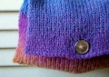

|
||
Premium Patterns Wintry Mix Mitts Love Bytes HawkeyeFree Patterns Kiddie Cadet Summerlin Ruffled Scarf Seamless DS Sock Simply Seamless Pouch Myriads of MushroomsExtras DIY Mitten Blocker Felt Patch Tutorial Yarn Dyeing Tutorial Needle Pouches Knitting Journal |
February 15, 2008 - Posted by Alice SchneblyAn Unusual ValentineProject Specs Meet Sweets, the cute Squarey that I gave to Camdyn for Valentine’s Day. I worked on her up until the very last minute and actually added the mouth and did the seaming yesterday morning! Camdyn knew I was knitting her a surprise so she was excited to receive her present. It seems like she really loves it too, and has been carrying Sweets around (and laying on it) quite a bit since I gave it to her. I’d been wanting to knit Squarey for a long time. It’s such a simple and cute idea I knew that Camdyn had to have one. This was also a great project to use up partial balls of worsted weight wools that I’ve had laying around for quite some time. I decided on some Project Spectrum-y colors and just went to it. I changed up the distribution of the colors and also made it look like Sweets was wearing pants and a striped shirt. I think the duplicate stitch heart adds a cute touch without being over the top. I made quite a few modifications to Squarey along the way. The original pattern calls for a gauge of 4 stitches/inch. I knew this would produce too loose of fabric for the yarn I was using, and the pillow form would definitely show through, so I opted for a tighter gauge of 5 stitches/inch. The pattern is also written to fit a 12” pillow form. Since I only had a 13” pillow form on hand, I ended up casting on 130 stitches, which is significantly more than the original pattern. I also cast on more stitches for the arms and legs. I knew I had to knit this project in the round. There really seems to be no reason to do two flat pieces and seam them together later. I think I’d go crazy, and I’d probably still be knitting too since my purling is drastically slower than my knitting. Once I achieved my desired length, I kitchenered the top stitches together. It was so simple and fast! If I knit Squarey again, I would do a provisional cast on to eliminate the seam at the bottom as well. I also picked up stitches for the arms, once again doing away with some more sewing. A new technique that I had never used before knitting squarey, was traveling jogless stripes, a method I read about at TECHknitting. I can say I will never go back to doing stripes any other way. I used it on both the body and on the arms and the color changes between stripes are nearly invisible. I absolutely love how much better it looks! I suggest you check it out if you plan on doing a project with stripes any time soon. As always, adding facial features was difficult for me. I think I had three different mouths before I settled on this little smile. I also added some wool felt behind the safety eyes to give her a cute bright eyed look. Although it’s difficult, I think it’s always fun to add the faces to toys. It really gives them so much personality! I hope everyone had a great Valentine’s Day! I know that I did. Kenny gave me a super cute surprise. Meet Jackpot, our new Chihuahua. He’s such cutie and so full of energy. I’m excited for Rufus to have a playmate, and we’re all excited to have a cute new addition to our family! |
   Recent ReviewsRecent Posts
 Our Favorites
|
| © 2007 KathrynIvy.com | ||
{kind=link}
{kind=link}
{kind=link}